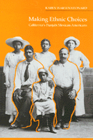

<body bgcolor="#FFFFFF" text="#000000" link="#0000FF" vlink="#CC0000" alink="#CC0000"><center><hr width="350" size="1" align="center" noshade>Defining and changing perceptions of ethnic identity<hr width="350" size="1" align="center" noshade><p><a href="https://cdcshoppingcart.uchicago.edu/Cart/ChicagoBook.aspx?ISBN=9780877228905&&PRESS=temple" target="_top">Buy this book!</a> | <a href="https://cdcshoppingcart.uchicago.edu/Cart/Cart.aspx?PRESS=temple" target="_top">View Cart</a> | <a href="https://cdcshoppingcart.uchicago.edu/Cart/Cart.aspx?PRESS=temple" target="_top">Check Out</a></p><p></p></center><!--none//--><h1>Making Ethnic Choices</h1>
<H2>California's Punjabi Mexican Americans</H2>
<h3>Karen Isaksen Leonard</h3>
<P>cloth 0-87722-890-6 $65.50, May 92, <FONT COLOR=#990033>Out of Stock Unavailable</FONT>
<br>paper 1-56639-202-0 $32.95, Jan 94, <FONT COLOR=#990033>Available</FONT>
<br>Electronic Book 1-43990-364-6 $32.95 <FONT COLOR=#990033>Out of Stock Unavailable</FONT>
<BR> 352 pp
6x9
</P><BLOCKQUOTE><I>"[A] thoroughly original study that greatly expands our knowledge of how ethnic identities are formed. Leonard writes clearly and her inclusion of the voices of the Punjabi-Mexicans lends humor and depth to the history. This insightful study will be of interest to all scholars concerned with immigration and ethnicity and the history of California."</I>
<br>&#151<b><I>The Journal of Asian Studies</I></b><I></I></BLOCKQUOTE>
<p>This is a study of the flexibility of ethnic identity. In the early twentieth century, men from India's Punjab province came to California to work on the land. The new immigrants had few chances to marry. There were very few marriageable Indian women, and miscegenation laws and racial prejudice limited their ability to find white Americans. Discovering an unexpected compatibility, Punjabis married women of Mexican descent and these alliances inspired others as the men introduced their bachelor friends to the sisters and friends of their wives. These biethnic families developed an identity as "Hindus" but also as Americans. Karen Leonard has related theories linking state policies and ethnicity to those applied at the level of marriage and family life. Using written sources and numerous interviews, she invokes gender, generation, class, religion, language, and the dramatic political changes of the 1940s in South Asia and the United States to show how individual and group perceptions of ethnic identity have changed among Punjabi Mexican Americans in rural California.
<BR>&nbsp;<h2>Excerpt</h2><P>Excerpt available at <a href="http://www.temple.edu/tempress">www.temple.edu/tempress</a></p>
<BR>&nbsp;<h2>Reviews</h2>
<p><I>"This is an extraordinary work. It is simultaneously an ethnography of early South Asian immigrant life in California, a model of fine-grained historical research using all manner of documents to reconstruct and interpret the migration flows, social structure, and family cycles of Punjabi men and their Mexican spouses, and a sophisticated examination of the complex role of 'identity' in their perceptions of themselves and their descendants.... In the midst of contemporary discussions about multi-culturalism, politically correctly positions, and valuing diversity, this book would be a fine place to begin a thoughtful consideration of the potential multiplicity of meanings ethnicity may have for human begins."</I>
<br>&#151<b><I>Journal of American Ethnic History</I></b>
<p><I>"No other book has the scope or the vision of Karen Leonard's work. I expect this book to be consulted as a model of historical research for many years to come."</I>
<br>&#151<b>James Freeman</b>, San Jose State University
<BR>&nbsp;<h2>Contents</h2><P>
<p>Preface
<p><b>Part I: Introduction</b>
<br>1. Exploring Ethnicity
<p><b>Part II: The World of the Pioneers</b>
<br>2. Contexts: California and the Punjab
<br>3. Early Days in the Imperial Valley
<br>4. Marriages and Children
<br>5. Male and Female Networks
<br>6. Conflict and Love in the Marriages
<p><b>Part III: The Construction of Ethnic Identity</b>
<br>7. Childhood in Rural California
<br>8. The Second Generation Comes of Age
<br>9. Political Change and Ethnic Identity
<br>10. Encounters with the Other
<br>11. Contending Voices
<p>Appendixes
<br>Notes
<br>Bibliography
<br>Index
</P><BR>&nbsp;<H2>About the Author(s)</H2>
<P><b>Karen Isaksen Leonard</b> is Professor of Anthropology at the University of California, Irvine.</P>
<BR><H2>Subject Categories</H2>
<p><A HREF="/tempress/race.html" TARGET="_top">Race and Ethnicity</a>
<BR><A HREF="/tempress/asian_amer.html" TARGET="_top">Asian American Studies</a>
</p>
<BR><h2 class="inpageheading">In the series</H2>
<P><I><a href="http://www.temple.edu/tempress/asam_history.html" onMouseOver="window.status='Click for other books in this series!'; return true;" onMouseOut="window.status=''; return true;" target="_top">Asian American History and Culture</a></i>, edited by K. Scott Wong, Linda Trinh V�, and Cathy Schlund-Vials.
</p><p>Founded by Sucheng Chan in 1991, the <I>Asian American History and Culture</I>, series has sponsored innovative scholarship that has redefined, expanded, and advanced the field of Asian American studies while strengthening its links to related areas of scholarly inquiry and engaged critique. Like the field from which it emerged, the series remains rooted in the social sciences and humanities, encompassing multiple regions, formations, communities, and identities. Extending the vision of founding editor Sucheng Chan and emeriti editor Michael Omi and David Palumbo-Liu, series editors K. Scott Wong, Linda Trinh V�, and Cathy Schlund-Vials continue to develop a foundational collection that embodies a range of theoretical and methodological approaches to Asian American studies.</p>
<p align="center"><a href="https://cdcshoppingcart.uchicago.edu/Cart/ChicagoBook.aspx?ISBN=9780877228905&&PRESS=temple" target="_top">Buy this book!</a> | <a href="https://cdcshoppingcart.uchicago.edu/Cart/Cart.aspx?PRESS=temple" target="_top">View Cart</a> | <a href="https://cdcshoppingcart.uchicago.edu/Cart/Cart.aspx?PRESS=temple" target="_top">Check Out</a></p><p><font face="Arial" size="1"><a href="copyright.html" onMouseOver="window.status='Web Copyright Policy';return true;" onMouseOut="window.status=''" title="Web Copyright Policy">&copy;</a> 2015 <a href="http://www.temple.edu" target="new" onMouseOver="window.status='Link to Temple University home page';return true;" onMouseOut="window.status=''" title="Link to Temple University home page">Temple University</a>. All Rights Reserved. http://www.temple.edu/tempress/titles/841_reg.html</font></p>